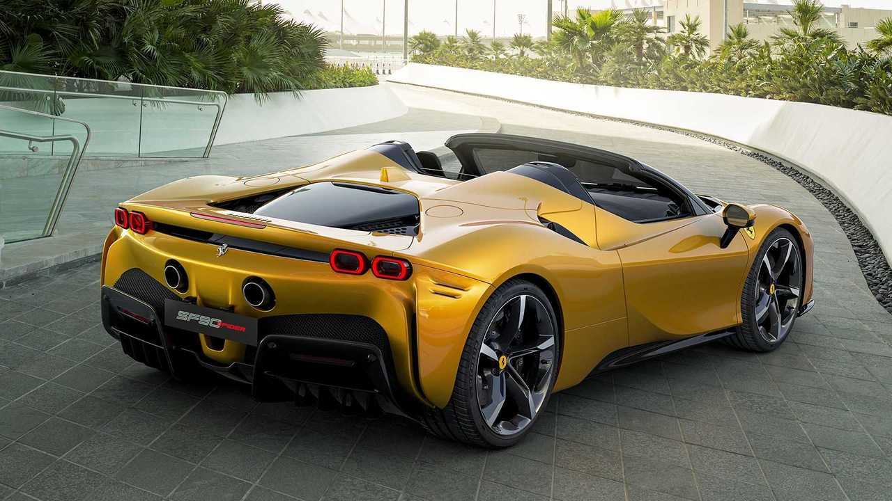
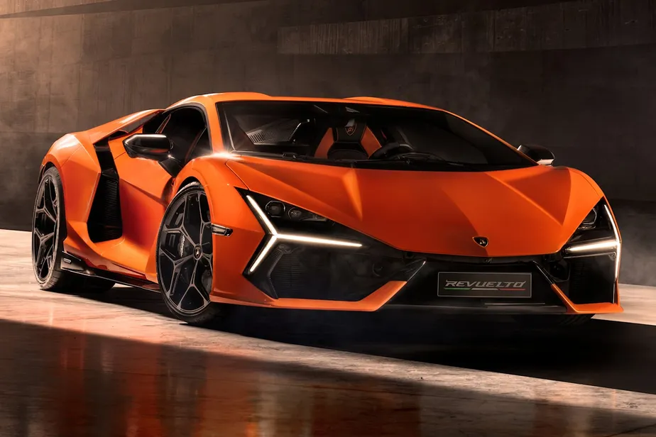

Ferrari SF90: A Ferrari SF90 é o primeiro superesportivo híbrido plug-in de série da marca, combinando um motor V8 biturbo com três motores elétricos para entregar 1.000 cv de potência, garantindo tração integral e uma aceleração impressionante de 0 a 100 km/h em apenas 2,5 segundos.

Lamborghini Revuelto: AO Lamborghini Revuelto é o primeiro superesportivo híbrido plug-in da marca e o sucessor do lendário Aventador, unindo um clássico motor V12 aspirado a três motores elétricos para gerar incríveis 1.015 cv de potência, garantindo tração integral e uma aceleração brutal de 0 a 100 km/h em apenas 2,5 segundos.

Bugatti Chiron: O Bugatti Chiron é um dos hipercarros mais rápidos e exclusivos já criados, movido por um colossal motor W16 tetraturbo de 8.0 litros puramente a combustão que entrega a partir de 1.500 cv de potência, capaz de acelerar de 0 a 100 km/h em 2,4 segundos e ultrapassar facilmente a marca dos 420 km/h de velocidade máxima.